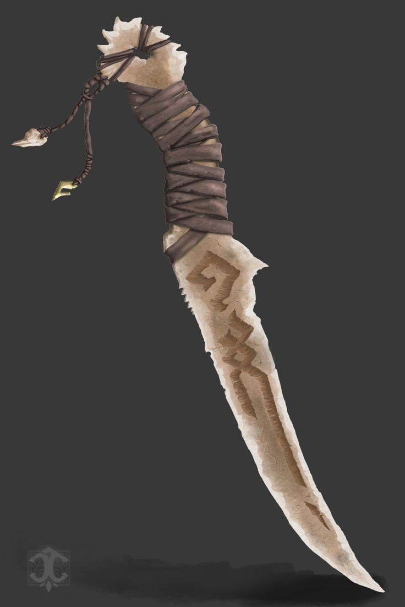

Legendary Items of the Realm

Rare
Kaha
A swift knife resembling strange symbols related to rune magic. It is said to have come from the Almighty Million-Tooth, also known as Te-Kaha.

Common
Pale ear
A useful relic which allows the wearer to have enhanced hearing. It was crafted and designed for the Pale, which is recognizable by the sharp design of the ear.

Rare
The Third Doomblade
Eight of these were created during the third era. Eight assassins were sent out to rival the hold of the Descendant of that time. They were each given a Doomblade and many other weapons. Despite the aid of the whole kingdom, the eight assassins failed at defeating the Descendant. Now the swords are all that remains.